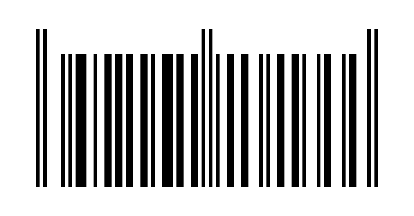

Friendly Instructive Simple Hunt Puzzles
Friendly Instructive Simple Hunt Puzzles
Friendly Instructive Simple Hunt Puzzles
Friendly Instructive Simple Hunt Puzzles
Difficulty:
4/10

This is a barcode
Try scanning the barcode; there are many sites that will do this for you
You should get a number
In a barcode, the middle ten digits hold the information (with the first being encoding information, and the last being a check digit)
You can use an A1Z26 cipher on the middle ten digits
The barcode seems to scan properly. If you don't know how barcodes work, this seems totally normal
The barcode is upside-down
Some Pokémon knowledge is required for extract.
Is there anything notable about this Pokémon being upside-down?
Scanning the barcode should yield "009141101256"
Split and take the middle ten digits, "0 09 14 11 01 25 6"
09 14 11 01 25 corresponds to INKAY
After getting the "close" message, you may realize the barcode is upside-down
INKAY, when flipped upside down, will evolve to MALAMAR
MALAMAR